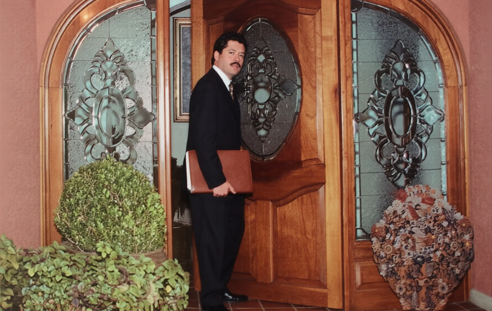
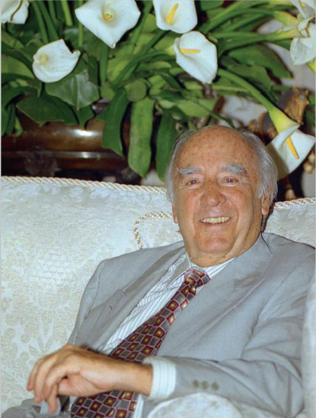
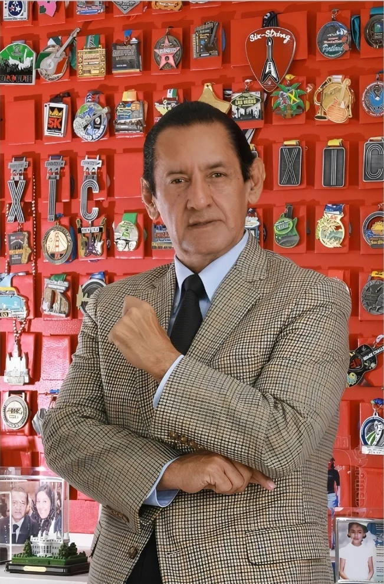
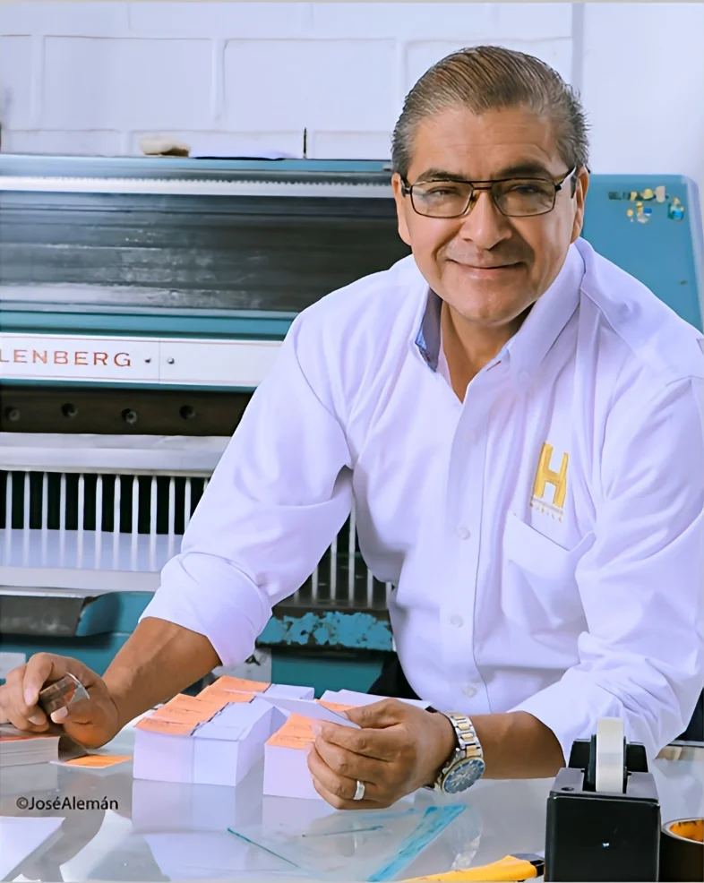
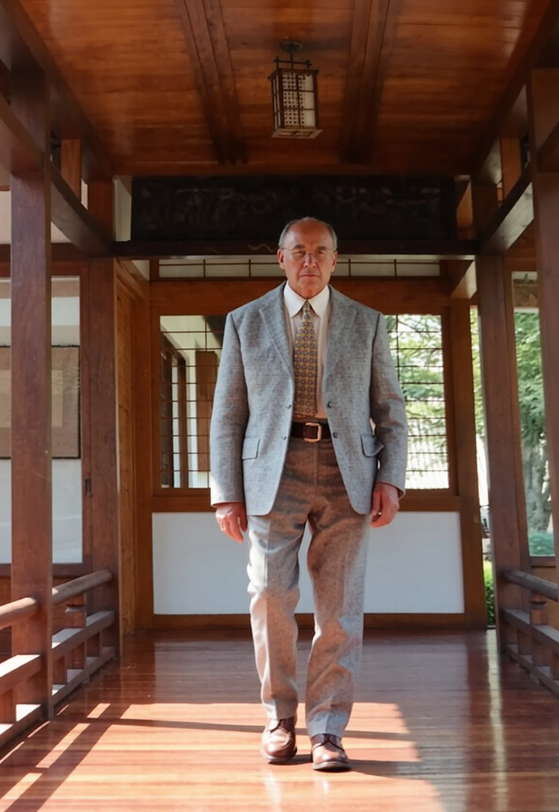
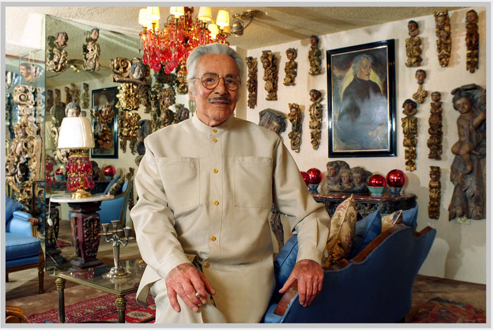
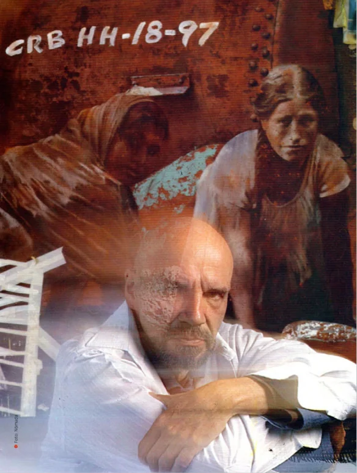

Estrategia visual y proyección de imagen para figuras públicas.
La imagen política no es solo un retrato; es una herramienta de comunicación estratégica. Capturamos la esencia, la confianza y la visión de quienes lideran, proyectando un mensaje claro y profesional que conecta con la ciudadanía. 40 años de experiencia respaldan nuestra capacidad para crear iconografía política de alto impacto.






